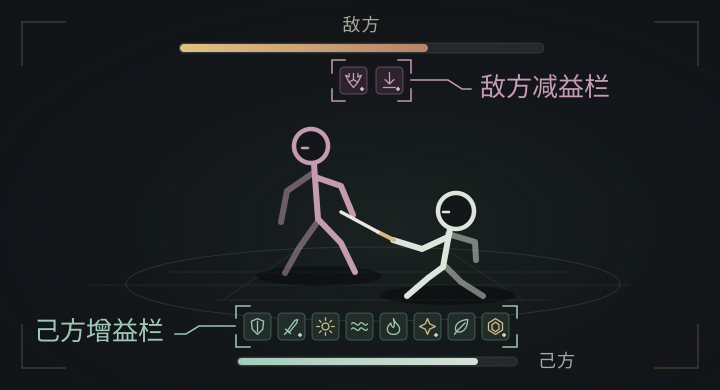

规则依据、个人体验与改动提案
从能力来源，走到实际取舍。
POSITION & LOOP
周度目标，容纳局内探索。
进入玩法时带入已培养角色；徽记确立构筑方向，隐喻沿途更新。战斗与成长彼此推动，周度奖励给这场探索一个可达成的目标。
个人路径本次从零周进度的普通终点 Boss 通关已完成周目标；追加挑战承接继续探索。该观察不代表所有玩家与难度。
战斗兑现循环
战斗积累梦境能量 → 主动解梦 → 强化阶段收益 → 继续战斗
局内成长循环
推进获得隐喻与货币 → 更新构筑 → 进入后续战斗与选择
两条循环在推进中交替：成长改变下一场战斗，战斗再提供新的选择与预算。
- 梦境能量
- 调度强化状态的进入时机
- 商店货币
- 支持局内购买与取舍
- 游历值
- 累计周度进度与奖励
周度目标让完成门槛保持可达，追加挑战为继续探索留出空间。核心隐喻强化路线，商店用有限预算补通用能力；“能领奖”和“构筑上限”需要分别评价。
CHARACTER → BUILD
把既有能力，变成构筑入口。
设计从角色已经拥有的能力展开：动作成为触发入口，资源进入收益交换，特殊机制提供新的联动。模式新增的规则则继续扩展战斗的组织方式。
ACCESSIBILITY & CHOICE
容易成型，仍然有选择空间。
本次测试想验证：不愿详细阅读效果的玩家，能否依靠系统推荐等直观提示完成关卡，拿到每周奖励。
先参考系统推荐，没有推荐时再比较品质，同档取最左。R04 雷暴局共进行了 19 次常规选择，并通过普通终点与追加挑战。
电挚补大招资源、缩短冷却 ／ 失序取消徽记触发间隔 ／ 义手刀解梦内额外触发。简单线索也能逐步接成更密集的循环。
提示降低负担，联动留下上限。
这局两次出现了不同偏好：玩家仍按稀有度取项，但已开始判断自己真正缺什么。容易完成并不是终点，活动仍为想要深度探索的玩家预留了构筑优化的空间。
- 高原的梦 / 队长的铭牌
- 实际拿高原的梦；更偏好与毁灭预言联动的暴击收益。
- 璀璨黑石花 / 尘封的秘典
- 实际拿黑石花；更想获得额外徽记触发。
METAPHOR → RHYTHM
不只增伤。
还重排出手、需求与风险。
凋零把触发收拢进有限窗口，齿轮让强化持续覆盖。强化何时可用发生变化，下一项隐喻的价值也要重新评价：延长窗口、加快回能与直接增伤，吸引力不再相同。
不同选择理由R06 坚盾路线没有取得齿轮之心：当时回能已经充足。它与狂欢路线中的持续生命压力是两种不同的取舍情境。
PROPOSED FEEDBACK
让玩家知道，
收益来自哪个动作、作用于谁。
已有能量条说明所处阶段，新增反馈要进一步说明：哪一个有效动作产生了收益，我方和目标身上又发生了什么变化。两类信息共同让构筑在战斗中可被感知。
表现方案示意下面用抽象动作讲解反馈设计，保留游戏既有触发、数值与奖励；动画不模拟绯雪技能规则。
动作触发反馈
关键动作值得聚焦；频繁触发的动作，则需要不打扰、但可辨识的回应。
确认真实生效，避免教错动作。
雷暴在有效触发时给一次主反馈，间隔内不误报；飓风区分原声骸与连锁，冰绽区分变奏与普通换人。领域自动伤害只表达收益，无法辨明来源时不宣称玩家完成了直接重击。
状态作用反馈
动作之后，还要让玩家看清：谁变强了，谁变弱了，状态何时结束。
图标已多，变化难辨。
增益挤在角色生命条上方；减益留在敌方生命条下方。

对象、强弱与结束，都对应真实状态。
狂欢·浸染在目标上显示狂乱层数与易伤；己方强化绑定实际增益，不能只因生命下降就越来越亮。心相以持续表现为主，关键层级轻提示，避免每次伤害都播放强音。
参照用户提供的实机截图重绘；图标样式与数量作结构示意。左图为反馈提案，右图说明现有状态栏的信息密度。
角色已有心念、寒意、雪锈等资源。复用阶段信息，把新提示放到刀、身体和作用目标附近；多段命中合并主要确认，连锁表现降强度，状态结束同步清除，控制混音与动作遮挡。
VALIDATION & EVIDENCE
先核事件，再验辨识。
定义生效条件、来源、持续与结束，再由战斗逻辑驱动表现。用相同片段或可控原型，分别验证理解、满意度与信息负担。
- 01
识别收益
能否注意到强化正在发生？
- 02
理解来源
能否分清动作触发与自动效果？
- 03
检查体验
满意度是否改变？噪声和遮挡是否增加？
- 04
修正方案
误导就改来源，嘈杂就降频，遮挡就缩小。
从结论，回到记录。
六局登记，四局公开转写；录音私有留存，尚无完整实机音画记录。